CAD-Konstruktion und 3D-Scan aus Fürthen
Individuelle CAD-Lösungen für Unternehmen, die Wert auf Funktionalität und Effizienz legen. Vom 3D-Scan bis zur fertigungsgerechten Zeichnung für Maschinenbau, Stahlbau und Reverse Engineering.
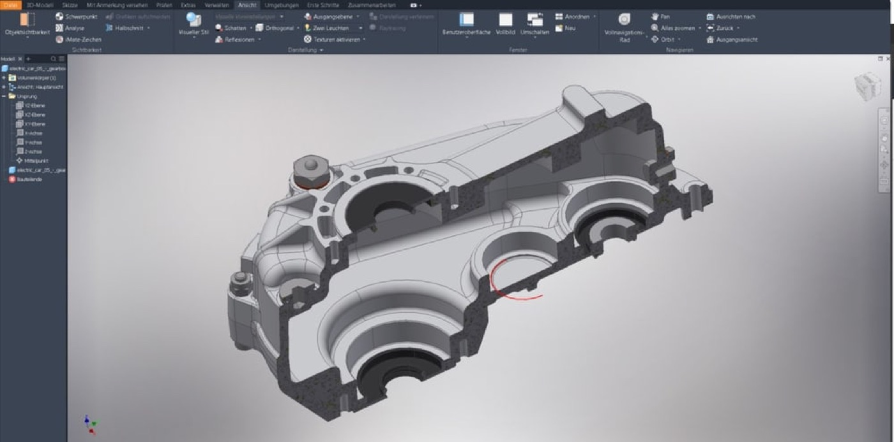
10+ Jahre
Branchenerfahrung
100+
erfolgreiche Projekte
2D & 3D
normkonforme Modelle
Ein Partner
von Scan bis Übergabe
3D-Scan, CAD-Modellierung und Rekonstruktion bestehender Bauteile
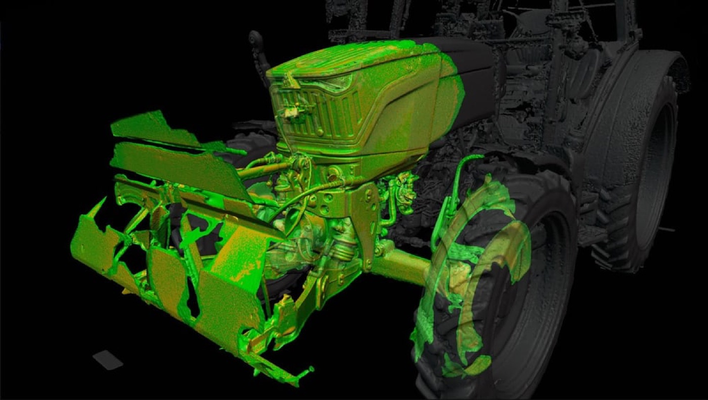
3D-Scan und exakte Datenerfassung
Exakte Datenerfassung für eine effiziente und zuverlässige Weiterverarbeitung. Vorhandene Baugruppen werden präzise digitalisiert und bilden die Grundlage für Konstruktion, Anpassung oder Nachbau.
Scan-Projekt anfragen →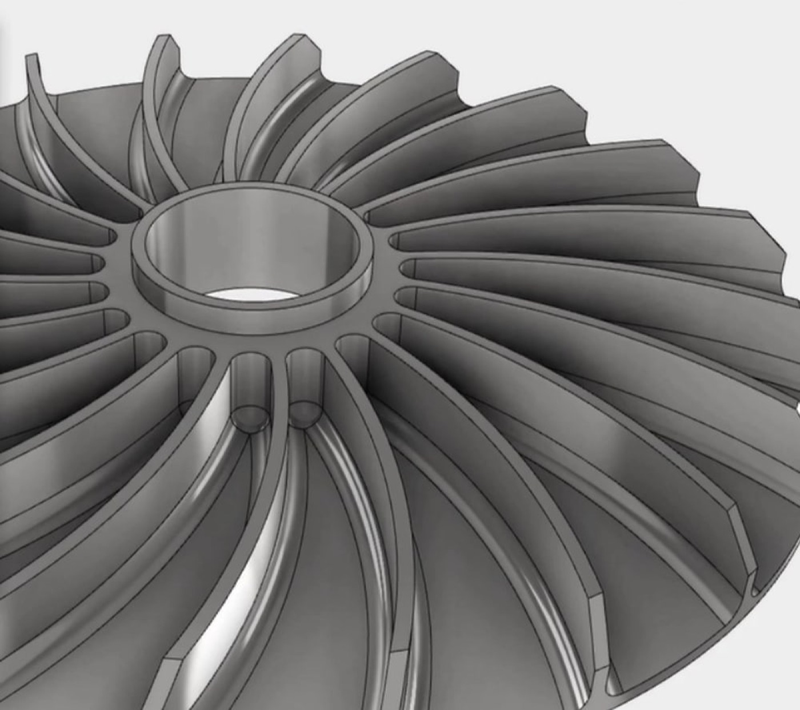
CAD-Modellierung in 2D und 3D
Optimierte Modelle für Fertigung, Montage und anschauliche Visualisierungen. Umgesetzt in modernen CAD-Systemen als normkonforme 3D-Modelle und fertigungsgerechte Zeichnungen.
Konstruktion anfragen →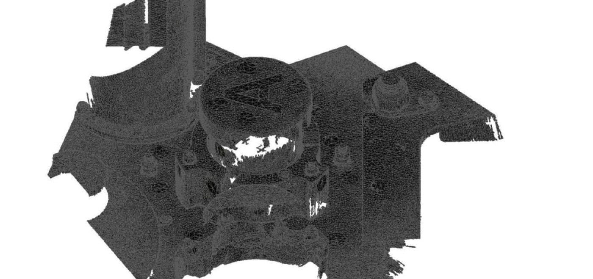
Rekonstruktion und Reverse Engineering
Professionelle Nachbildung vorhandener Komponenten auf Basis präziser Datenerfassung. Ideal, wenn keine Zeichnung mehr existiert oder ein Bauteil verbessert werden soll.
Rekonstruktion anfragen →Außerdem: Fundierte technische Beratung und präzise Planung für einen erfolgreichen Projektverlauf, inklusive Begleitung der Umsetzung auf Wunsch.
Warum Unternehmen ihre Konstruktion an Febrix-Projekt geben
Präzision
Genauigkeit und Qualität durch modernste CAD-Technologien.
Effizienz
Schnelle Umsetzung und optimierte Lösungen für Ihre Projekte.
Über 10 Jahre Erfahrung
Langjährige Erfahrung mit über 100 erfolgreichen Projekten.
Fertigungsgerecht
Ganzheitlich, normgerecht und stets mit Blick auf die spätere Fertigung gedacht.
Ausgewählte CAD-Projekte aus Maschinenbau und Stahlbau
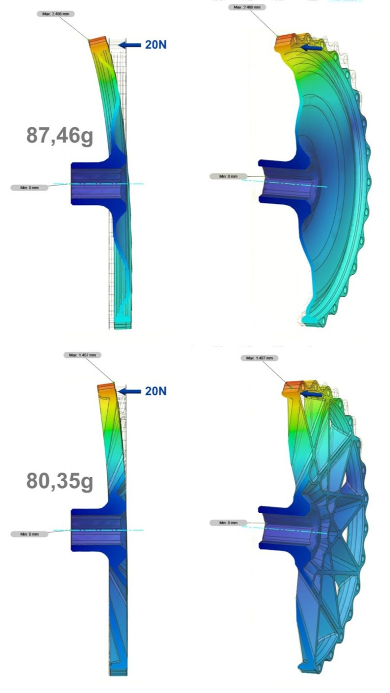
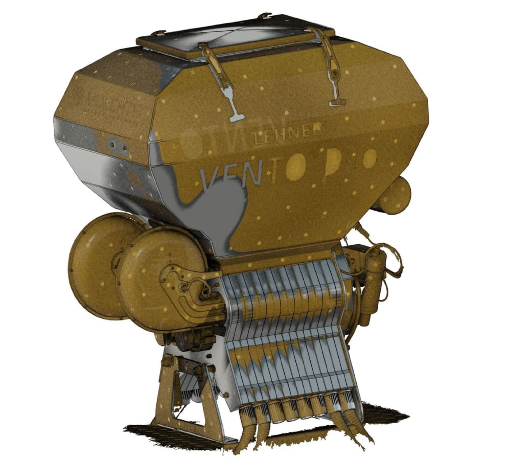
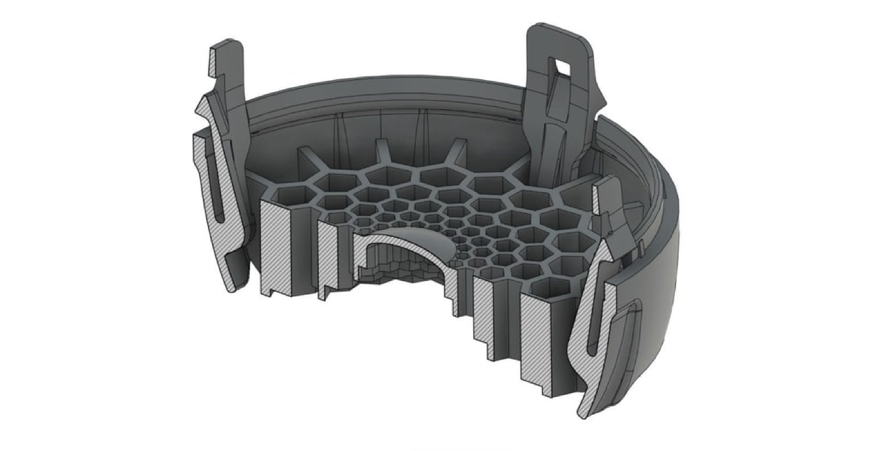
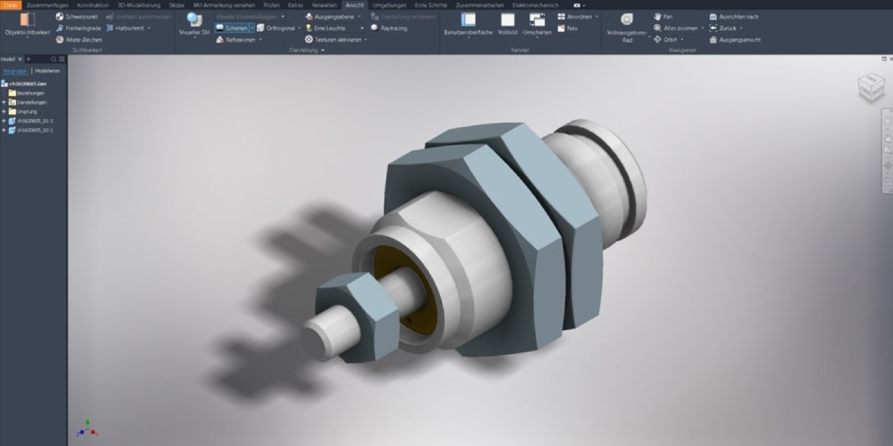
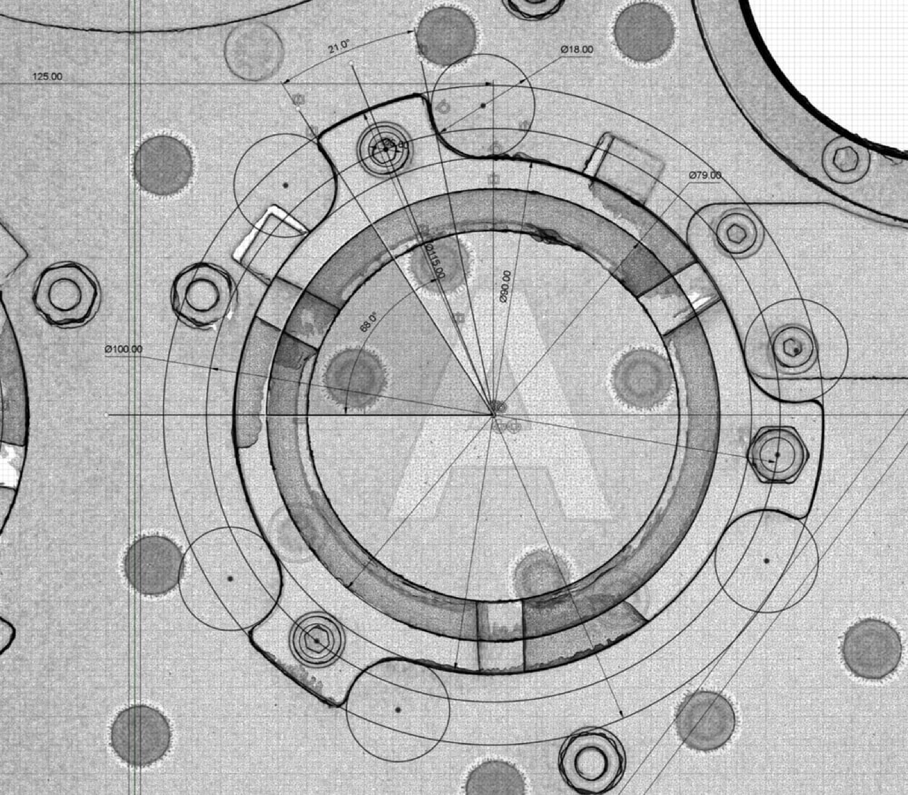
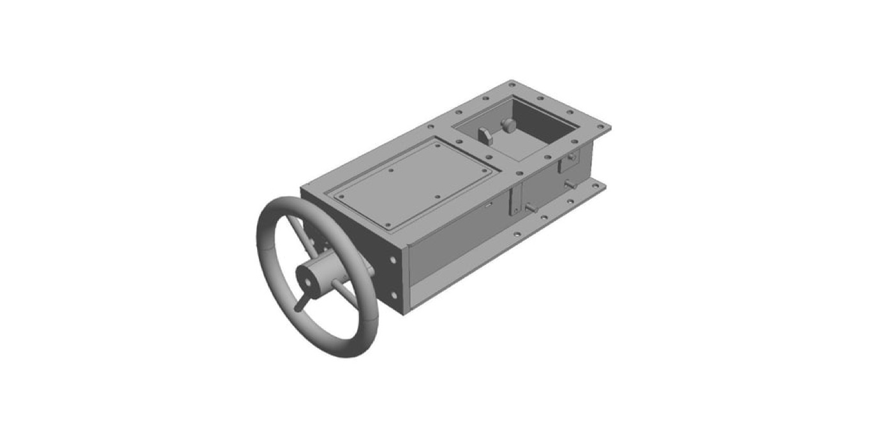
Skizze, Lastenheft oder nur eine Idee? Sprechen wir darüber.
Schildern Sie Ihr Vorhaben. Gemeinsam klären wir Anforderungen, technische Details und den Projektumfang.
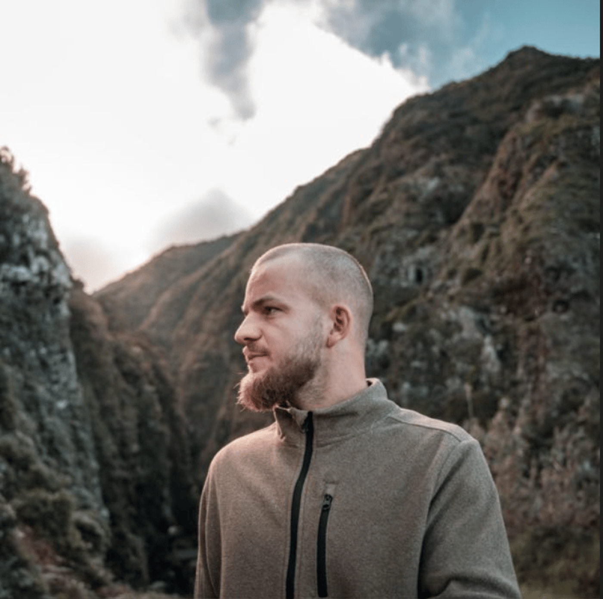
Felix Braun
Gründer Febrix-Projekt
Felix Braun und Febrix-Projekt: so läuft Ihr CAD-Projekt ab
Mit über 10 Jahren Branchenerfahrung und über 100 erfolgreichen Projekten begleitet Febrix-Projekt Unternehmen von der ersten Idee bis zur fertigungsgerechten Übergabe. Verlässlich, partnerschaftlich, lösungsorientiert.
- 1
Erstkontakt und Anforderungsanalyse
Sie schildern Ihren Plan, wir klären technische Details und definieren den Projektumfang.
- 2
Planung und Konzeptentwicklung
Ein tragfähiges Konzept, funktional, normgerecht und mit Blick auf die Fertigung.
- 3
Projektierung und CAD-Konstruktion
Präzise Umsetzung als normkonforme 3D-Modelle und fertigungsgerechte Zeichnungen.
- 4
Fertigungsgerechte Übergabe
Zeichnungen, Stücklisten und CAD-Daten in der gewünschten Form.
- 5
Technische Beratung und Support
Auch nach Abschluss für Rückfragen, Anpassungen und Folgeprojekte da.
Was Kunden über die Zusammenarbeit mit Febrix-Projekt sagen
Platzhalter: Es wurde kein Google-Unternehmensprofil gefunden. Die folgenden Stimmen sind Beispiele und werden durch echte Bewertungen ersetzt.
★★★★★
„Unser Bauteil ohne Zeichnung wurde gescannt und sauber nachkonstruiert. Die Daten gingen direkt in die Fertigung.“
★★★★★
„Von der Skizze zum fertigen 3D-Modell, schnell und genau. Rückfragen wurden immer direkt beantwortet.“
★★★★★
„Zuverlässiger Partner für Konstruktion und Beratung. Wir arbeiten gerne auch bei Folgeprojekten zusammen.“
Häufige Fragen zu CAD-Konstruktion und 3D-Scan
Was brauche ich, um ein Projekt zu starten?
Eine Skizze, ein Lastenheft oder nur eine Idee reicht. Im Erstkontakt analysieren wir gemeinsam Ihre Anforderungen, klären technische Details und definieren den Projektumfang.
In welcher Form erhalte ich die Ergebnisse?
In der gewünschten Form: Zeichnungen, Stücklisten und CAD-Daten, bereit für die Fertigung oder Weiterverarbeitung.
Können bestehende Bauteile ohne Zeichnung nachkonstruiert werden?
Ja. Per 3D-Scan werden vorhandene Komponenten präzise erfasst und anschließend als CAD-Modell rekonstruiert.
Was kostet eine CAD-Konstruktion?
Das hängt vom Umfang und der Komplexität ab. Nach dem Erstkontakt erhalten Sie eine klare Einschätzung zu Aufwand und Kosten.
Gibt es Unterstützung nach Projektabschluss?
Ja. Auch nach Projektabschluss stehen wir für Rückfragen, Anpassungen oder Folgeprojekte zur Verfügung. Auf Wunsch begleiten wir auch die Umsetzung.
CAD-Projekt in Fürthen und Umgebung anfragen
Beschreiben Sie kurz Ihr Vorhaben. Wir melden uns zeitnah mit einer ersten Einschätzung.
Febrix-Projekt · Felix Braun
Fichtenweg 11, 57539 Fürthen
Erreichbarkeit Beispiel
Mo bis Fr 8:00 bis 17:00 Uhr (auf der Altseite nicht angegeben, bitte bestätigen)